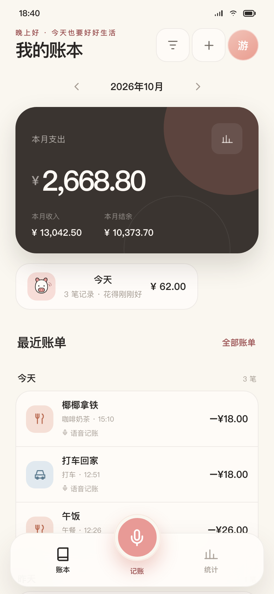
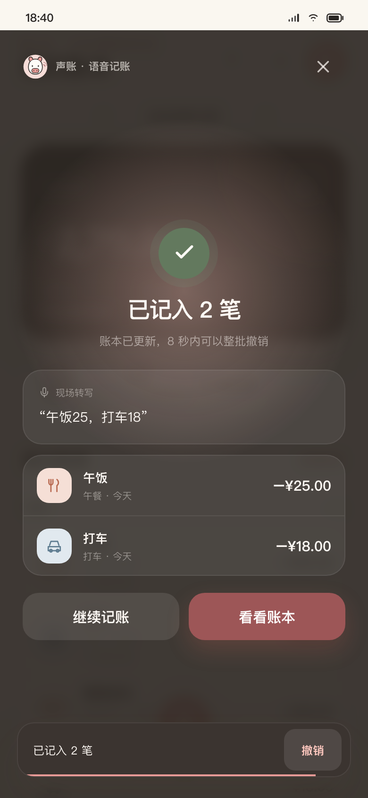

<template id="voice-template">
  <div
    data-composition-id="02-voice"
    data-width="1080"
    data-height="1920"
    data-duration="12.65"
  >
    <div class="scene-content" data-layout-allow-overlap>
      <div class="halo halo-blush" data-layout-ignore></div>
      <div class="halo halo-sage" data-layout-ignore></div>
      <div class="ghost-sentence" aria-hidden="true" data-layout-ignore></div>

      <div class="masthead">
        <span class="index">01 / 一句话</span>
        <span class="live"><i></i>正在听清</span>
      </div>

      <div class="copy-block">
        <h1>
          <span class="headline-one">一句话，</span>
          <span class="headline-two">账单自己长出来。</span>
        </h1>
      </div>

      <div class="voice-capture">
        <div class="waveform">
          <i></i><i></i><i></i><i></i><i></i><i></i><i></i><i></i><i></i>
        </div>
        <div class="transcript">
          <span class="said-one">午饭 25，</span>
          <span class="said-two">打车 18，</span>
          <span class="said-three">咖啡 16。</span>
        </div>
        <div class="capture-note">按住说，松手记</div>
      </div>

      <div class="phone-stage">
        <div class="phone-shadow"></div>
        <div class="phone">
          <div class="phone-island"></div>
          <div class="phone-screen">
            
            
            <div class="screen-shine"></div>
          </div>
        </div>

        <div class="entry-card entry-one">
          <span class="entry-type">餐饮 · 午餐</span>
          <strong>−¥25.00</strong>
          <span class="entry-time">今天 12:28</span>
        </div>
        <div class="entry-card entry-two">
          <span class="entry-type">交通 · 打车</span>
          <strong>−¥18.00</strong>
          <span class="entry-time">今天 12:28</span>
        </div>
        <div class="entry-card entry-three">
          <span class="entry-type">餐饮 · 咖啡</span>
          <strong>−¥16.00</strong>
          <span class="entry-time">今天 12:28</span>
        </div>

        <div class="saved-chip">
          <span class="saved-check">✓</span>
          <span>已记好 3 笔</span>
        </div>

        <div class="undo-card">
          <div class="undo-count">8<span>s</span></div>
          <div class="undo-copy">
            <strong>整批撤销</strong>
            <small>这张账单，仍在你手里</small>
            <div class="undo-track"><i></i></div>
          </div>
          <div class="undo-mark">↶</div>
        </div>
      </div>

      <div class="bottom-note">
        <span>不确认，直接入账</span>
        <span class="note-dot"></span>
        <span>金额、分类、日期一起整理</span>
      </div>
    </div>

    <style>
      @font-face {
        font-family: "PingFang SC";
        src: local("PingFang SC");
      }

      @font-face {
        font-family: "Hiragino Sans GB";
        src: local("Hiragino Sans GB");
      }

      @font-face {
        font-family: "Songti SC";
        src: local("Songti SC");
      }

      @font-face {
        font-family: "STSong";
        src: local("STSong");
      }

      @font-face {
        font-family: "Noto Serif CJK SC";
        src: local("Noto Serif CJK SC");
      }

      [data-composition-id="02-voice"] {
        width: 1080px;
        height: 1920px;
        overflow: hidden;
        color: #292624;
        background:
          radial-gradient(circle at 84% 16%, rgba(247, 221, 216, 0.78), rgba(250, 247, 240, 0) 26%),
          radial-gradient(circle at 10% 58%, rgba(229, 235, 225, 0.82), rgba(250, 247, 240, 0) 28%),
          #faf7f0;
        font-family: "PingFang SC", "Hiragino Sans GB", sans-serif;
      }

      [data-composition-id="02-voice"] .scene-content {
        position: relative;
        display: flex;
        flex-direction: column;
        width: 100%;
        height: 100%;
        padding: 72px 72px 54px;
        overflow: hidden;
      }

      [data-composition-id="02-voice"] .halo {
        position: absolute;
        border-radius: 50%;
        filter: blur(8px);
      }

      [data-composition-id="02-voice"] .halo-blush {
        top: -190px;
        right: -250px;
        width: 680px;
        height: 680px;
        background: radial-gradient(
          circle,
          rgba(232, 154, 150, 0.25),
          rgba(232, 154, 150, 0) 70%
        );
      }

      [data-composition-id="02-voice"] .halo-sage {
        top: 1050px;
        left: -330px;
        width: 780px;
        height: 780px;
        background: radial-gradient(
          circle,
          rgba(158, 173, 152, 0.22),
          rgba(158, 173, 152, 0) 70%
        );
      }

      [data-composition-id="02-voice"] .ghost-sentence {
        position: absolute;
        top: 850px;
        left: -380px;
        width: 1900px;
        color: rgba(41, 38, 36, 0.035);
        font-family: "Songti SC", "STSong", serif;
        font-size: 170px;
        font-weight: 600;
        white-space: nowrap;
      }

      [data-composition-id="02-voice"] .ghost-sentence::before {
        content: "午饭 25 · 打车 18 · 咖啡 16";
      }

      [data-composition-id="02-voice"] .masthead {
        position: relative;
        z-index: 8;
        display: flex;
        align-items: center;
        justify-content: space-between;
      }

      [data-composition-id="02-voice"] .index {
        color: #9d5657;
        font-size: 24px;
        font-weight: 700;
        letter-spacing: 0.12em;
      }

      [data-composition-id="02-voice"] .live {
        display: flex;
        align-items: center;
        gap: 12px;
        color: #4f684d;
        font-size: 21px;
        font-weight: 600;
      }

      [data-composition-id="02-voice"] .live i {
        width: 12px;
        height: 12px;
        border-radius: 50%;
        background: #63795e;
        box-shadow: 0 0 0 8px rgba(99, 121, 94, 0.12);
      }

      [data-composition-id="02-voice"] .copy-block {
        position: relative;
        z-index: 8;
        margin-top: 54px;
      }

      [data-composition-id="02-voice"] h1 {
        margin: 0;
        font-family: "Songti SC", "STSong", "Noto Serif CJK SC", serif;
        font-size: 77px;
        font-weight: 600;
        letter-spacing: -0.065em;
        line-height: 1.12;
      }

      [data-composition-id="02-voice"] h1 span {
        display: block;
      }

      [data-composition-id="02-voice"] .headline-two {
        color: #9d5657;
      }

      [data-composition-id="02-voice"] .voice-capture {
        position: relative;
        z-index: 9;
        display: grid;
        grid-template-columns: 132px minmax(0, 1fr);
        grid-template-rows: auto auto;
        align-items: center;
        width: 874px;
        min-height: 130px;
        margin: 32px auto 0;
        padding: 20px 30px 20px 24px;
        border: 1px solid rgba(255, 253, 248, 0.12);
        border-radius: 36px;
        color: #fffdf8;
        background: #292624;
        box-shadow: 0 26px 68px rgba(41, 38, 36, 0.19);
      }

      [data-composition-id="02-voice"] .waveform {
        display: flex;
        align-items: center;
        justify-content: center;
        gap: 6px;
        grid-row: 1 / span 2;
      }

      [data-composition-id="02-voice"] .waveform i {
        display: block;
        width: 5px;
        height: 22px;
        border-radius: 999px;
        background: #e89a96;
      }

      [data-composition-id="02-voice"] .waveform i:nth-child(1),
      [data-composition-id="02-voice"] .waveform i:nth-child(9) {
        height: 14px;
      }

      [data-composition-id="02-voice"] .waveform i:nth-child(2),
      [data-composition-id="02-voice"] .waveform i:nth-child(8) {
        height: 31px;
      }

      [data-composition-id="02-voice"] .waveform i:nth-child(3),
      [data-composition-id="02-voice"] .waveform i:nth-child(7) {
        height: 44px;
      }

      [data-composition-id="02-voice"] .waveform i:nth-child(5) {
        height: 58px;
      }

      [data-composition-id="02-voice"] .transcript {
        display: flex;
        align-items: baseline;
        gap: 6px;
        white-space: nowrap;
        font-family: "Songti SC", "STSong", serif;
        font-size: 35px;
        font-weight: 600;
        letter-spacing: -0.04em;
      }

      [data-composition-id="02-voice"] .transcript span {
        display: inline-block;
      }

      [data-composition-id="02-voice"] .capture-note {
        margin-top: 6px;
        color: rgba(255, 253, 248, 0.52);
        font-size: 19px;
        letter-spacing: 0.08em;
      }

      [data-composition-id="02-voice"] .phone-stage {
        position: relative;
        z-index: 4;
        flex: 1;
        min-height: 0;
      }

      [data-composition-id="02-voice"] .phone-shadow {
        position: absolute;
        top: 238px;
        left: 50%;
        width: 660px;
        height: 990px;
        margin-left: -330px;
        border-radius: 110px;
        background: rgba(64, 47, 37, 0.18);
        filter: blur(57px);
        transform: rotate(-2deg);
      }

      [data-composition-id="02-voice"] .phone {
        position: absolute;
        top: 42px;
        left: 50%;
        width: 602px;
        height: 1287px;
        margin-left: -301px;
        padding: 14px;
        border: 2px solid rgba(41, 38, 36, 0.18);
        border-radius: 77px;
        background: #272421;
        box-shadow:
          0 42px 100px rgba(55, 43, 35, 0.25),
          inset 0 0 0 2px rgba(255, 253, 248, 0.13);
        transform: rotate(-2.2deg);
        transform-origin: 50% 100%;
      }

      [data-composition-id="02-voice"] .phone-island {
        position: absolute;
        z-index: 12;
        top: 26px;
        left: 50%;
        width: 152px;
        height: 34px;
        margin-left: -76px;
        border-radius: 999px;
        background: #1d1b19;
      }

      [data-composition-id="02-voice"] .phone-screen {
        position: relative;
        width: 570px;
        height: 1256px;
        overflow: hidden;
        border-radius: 63px;
        background: #faf7f0;
      }

      [data-composition-id="02-voice"] .screen-image {
        position: absolute;
        inset: 0;
        width: 100%;
        height: 100%;
        object-fit: cover;
      }

      [data-composition-id="02-voice"] .screen-result {
        opacity: 0;
      }

      [data-composition-id="02-voice"] .screen-shine {
        position: absolute;
        z-index: 3;
        inset: 0;
        background: linear-gradient(
          118deg,
          rgba(255, 255, 255, 0.18),
          rgba(255, 255, 255, 0) 26%,
          rgba(255, 255, 255, 0) 74%,
          rgba(255, 255, 255, 0.07)
        );
        pointer-events: none;
      }

      [data-composition-id="02-voice"] .entry-card {
        position: absolute;
        z-index: 10;
        display: grid;
        grid-template-columns: minmax(0, 1fr) auto;
        width: 326px;
        min-height: 130px;
        padding: 23px 24px 20px;
        border: 1px solid rgba(41, 38, 36, 0.1);
        border-radius: 28px;
        background: rgba(255, 253, 248, 0.96);
        box-shadow: 0 22px 52px rgba(55, 43, 35, 0.14);
      }

      [data-composition-id="02-voice"] .entry-one {
        top: 240px;
        left: 0;
        transform: rotate(-6deg);
      }

      [data-composition-id="02-voice"] .entry-two {
        top: 496px;
        right: -2px;
        transform: rotate(5.5deg);
      }

      [data-composition-id="02-voice"] .entry-three {
        top: 742px;
        left: 34px;
        transform: rotate(2.6deg);
      }

      [data-composition-id="02-voice"] .entry-type {
        color: #726b64;
        font-size: 21px;
        font-weight: 500;
      }

      [data-composition-id="02-voice"] .entry-card strong {
        font-family: "Avenir Next", "DIN Alternate", sans-serif;
        font-size: 32px;
        font-weight: 600;
        font-variant-numeric: tabular-nums;
        letter-spacing: -0.035em;
      }

      [data-composition-id="02-voice"] .entry-time {
        margin-top: 8px;
        color: #6e665f;
        font-size: 18px;
      }

      [data-composition-id="02-voice"] .saved-chip {
        position: absolute;
        z-index: 11;
        top: 72px;
        left: 50%;
        display: flex;
        align-items: center;
        gap: 13px;
        padding: 14px 23px 15px 17px;
        border-radius: 999px;
        color: #fffdf8;
        background: #63795e;
        box-shadow: 0 18px 44px rgba(80, 102, 74, 0.2);
        font-size: 24px;
        font-weight: 600;
        opacity: 0;
        transform: translateX(-50%);
      }

      [data-composition-id="02-voice"] .saved-check {
        display: grid;
        place-items: center;
        width: 31px;
        height: 31px;
        border: 1px solid rgba(255, 253, 248, 0.52);
        border-radius: 50%;
        font-size: 18px;
      }

      [data-composition-id="02-voice"] .undo-card {
        position: absolute;
        z-index: 12;
        right: 6px;
        bottom: 26px;
        display: grid;
        grid-template-columns: 118px minmax(0, 1fr) 50px;
        align-items: center;
        width: 562px;
        min-height: 150px;
        padding: 18px 24px 18px 20px;
        border: 1px solid rgba(255, 253, 248, 0.12);
        border-radius: 32px;
        color: #fffdf8;
        background: #292624;
        box-shadow: 0 30px 70px rgba(41, 38, 36, 0.24);
        opacity: 0;
        transform: translateY(42px);
      }

      [data-composition-id="02-voice"] .undo-count {
        color: #e89a96;
        font-family: "Avenir Next", "DIN Alternate", sans-serif;
        font-size: 78px;
        font-weight: 500;
        letter-spacing: -0.08em;
        line-height: 1;
      }

      [data-composition-id="02-voice"] .undo-count span {
        margin-left: 2px;
        font-size: 31px;
      }

      [data-composition-id="02-voice"] .undo-copy {
        display: flex;
        flex-direction: column;
      }

      [data-composition-id="02-voice"] .undo-copy strong {
        font-family: "Songti SC", "STSong", serif;
        font-size: 31px;
        font-weight: 600;
      }

      [data-composition-id="02-voice"] .undo-copy small {
        margin-top: 4px;
        color: rgba(255, 253, 248, 0.54);
        font-size: 18px;
      }

      [data-composition-id="02-voice"] .undo-track {
        width: 100%;
        height: 4px;
        margin-top: 13px;
        overflow: hidden;
        border-radius: 999px;
        background: rgba(255, 253, 248, 0.13);
      }

      [data-composition-id="02-voice"] .undo-track i {
        display: block;
        width: 100%;
        height: 100%;
        border-radius: inherit;
        background: #e89a96;
        transform-origin: left;
      }

      [data-composition-id="02-voice"] .undo-mark {
        color: rgba(255, 253, 248, 0.42);
        font-size: 44px;
        text-align: right;
      }

      [data-composition-id="02-voice"] .bottom-note {
        position: relative;
        z-index: 8;
        display: flex;
        align-items: center;
        justify-content: center;
        gap: 16px;
        margin-top: 20px;
        color: #726b64;
        font-size: 20px;
      }

      [data-composition-id="02-voice"] .note-dot {
        width: 5px;
        height: 5px;
        border-radius: 50%;
        background: #b8afa6;
      }
    </style>

    <script src="../assets/vendor/gsap.min.js"></script>
    <script>
      (function () {
        const root = '[data-composition-id="02-voice"]';
        const tl = gsap.timeline({ paused: true });

        tl.from(`${root} .masthead`, { y: -26, opacity: 0, duration: 0.4, ease: "power3.out" }, 0.14);
        tl.from(`${root} .headline-one`, { x: -46, opacity: 0, duration: 0.52, ease: "expo.out" }, 0.26);
        tl.from(`${root} .headline-two`, { y: 42, opacity: 0, duration: 0.58, ease: "power4.out" }, 0.4);
        tl.from(`${root} .voice-capture`, { y: 34, opacity: 0, scale: 0.97, duration: 0.46, ease: "power3.out" }, 0.7);
        tl.from(`${root} .waveform i`, { scaleY: 0.18, duration: 0.34, ease: "sine.inOut", stagger: 0.04 }, 0.86);
        tl.from(`${root} .phone`, { y: 180, opacity: 0, rotation: 1.5, duration: 0.86, ease: "expo.out" }, 0.66);
        tl.from(`${root} .phone-shadow`, { y: 70, opacity: 0, duration: 0.8, ease: "sine.out" }, 0.78);
        tl.to(
          `${root} .phone`,
          { y: "+=7", scale: 1.004, duration: 1.2, ease: "sine.inOut", yoyo: true, repeat: 2 },
          1.7,
        );
        tl.to(
          `${root} .waveform i`,
          {
            scaleY: 0.46,
            duration: 0.26,
            ease: "sine.inOut",
            stagger: { each: 0.045, from: "center" },
            yoyo: true,
            repeat: 5,
          },
          4.45,
        );
        tl.from(`${root} .said-one`, { x: -18, opacity: 0, duration: 0.26, ease: "power2.out" }, 2.35);
        tl.from(`${root} .said-two`, { x: -18, opacity: 0, duration: 0.26, ease: "power2.out" }, 3.15);
        tl.from(`${root} .said-three`, { x: -18, opacity: 0, duration: 0.26, ease: "power2.out" }, 3.95);
        tl.from(`${root} .capture-note`, { y: 10, opacity: 0, duration: 0.28, ease: "power1.out" }, 4.55);

        tl.from(`${root} .entry-one`, { x: -120, y: -26, opacity: 0, rotation: -13, duration: 0.44, ease: "back.out(1.5)" }, 4.35);
        tl.from(`${root} .entry-two`, { x: 120, y: 20, opacity: 0, rotation: 12, duration: 0.44, ease: "back.out(1.5)" }, 4.75);
        tl.from(`${root} .entry-three`, { x: -96, y: 42, opacity: 0, rotation: -8, duration: 0.44, ease: "back.out(1.5)" }, 5.15);

        tl.to(`${root} .screen-home`, { opacity: 0, duration: 0.32, ease: "power1.inOut" }, 7.15);
        tl.fromTo(
          `${root} .screen-result`,
          { opacity: 0, scale: 1.018 },
          { opacity: 1, scale: 1, duration: 0.46, ease: "power2.out" },
          7.21,
        );
        tl.to(
          `${root} .screen-result`,
          { scale: 1.007, duration: 1.15, ease: "sine.inOut", yoyo: true, repeat: 2 },
          7.8,
        );
        tl.to(`${root} .phone`, { y: -18, duration: 0.5, ease: "power2.out" }, 7.18);
        tl.fromTo(
          `${root} .saved-chip`,
          { opacity: 0, y: -18, scale: 0.92 },
          { opacity: 1, y: 0, scale: 1, duration: 0.38, ease: "back.out(1.8)" },
          7.35,
        );

        tl.fromTo(
          `${root} .undo-card`,
          { opacity: 0, y: 42 },
          { opacity: 1, y: 0, duration: 0.44, ease: "power3.out" },
          9.05,
        );
        tl.from(`${root} .undo-count`, { scale: 0.78, opacity: 0, duration: 0.34, ease: "back.out(2)" }, 9.17);
        tl.from(`${root} .undo-mark`, { x: 18, opacity: 0, duration: 0.3, ease: "power2.out" }, 9.27);
        tl.to(`${root} .undo-track i`, { scaleX: 0.22, duration: 2.5, ease: "none" }, 9.42);
        tl.to(
          `${root} .undo-card`,
          { y: -4, scale: 1.008, duration: 0.95, ease: "sine.inOut", yoyo: true, repeat: 2 },
          9.55,
        );

        tl.from(`${root} .bottom-note`, { y: 16, opacity: 0, duration: 0.34, ease: "power2.out" }, 10.3);
        tl.to(`${root} .ghost-sentence`, { x: 100, duration: 3.8, ease: "sine.inOut" }, 5.8);
        tl.to(`${root} .halo-blush`, { y: 42, scale: 1.06, duration: 3.4, ease: "sine.inOut" }, 1.2);
        tl.to(`${root} .halo-sage`, { y: -44, duration: 3.8, ease: "sine.inOut" }, 4.6);
        tl.to(`${root} .entry-one`, { y: -13, duration: 2.2, ease: "sine.inOut" }, 4.1);
        tl.to(`${root} .entry-two`, { y: 12, duration: 2.6, ease: "sine.inOut" }, 4.35);
        tl.to(`${root} .entry-three`, { y: -9, duration: 2.4, ease: "sine.inOut" }, 4.55);

        window.__timelines = window.__timelines || {};
        window.__timelines["02-voice"] = tl;
      })();
    </script>
  </div>
</template>
